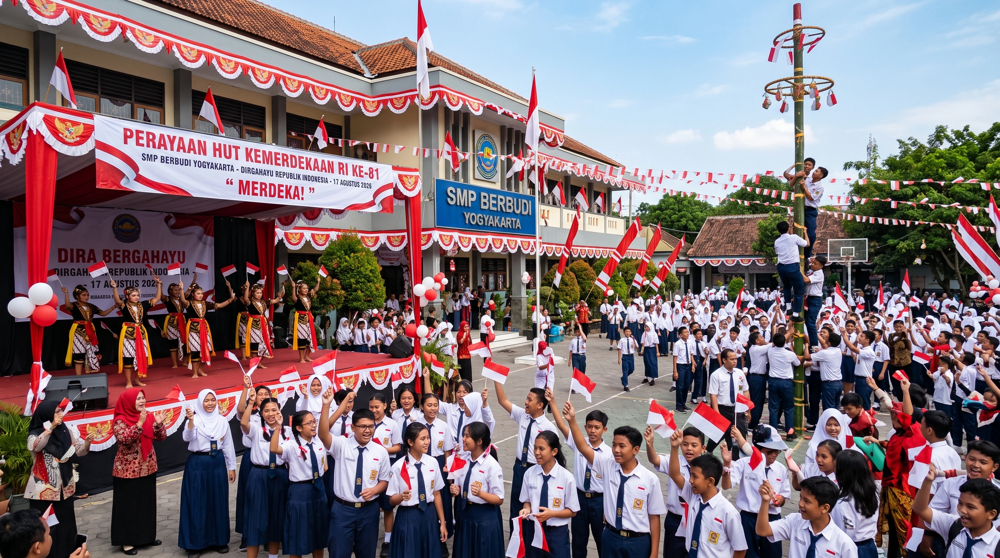

Acara Sekolah
12 Agustus 2026
Perayaan HUT Kemerdekaan RI ke-81 Berlangsung Meriah
SMP Berbudi menggelar serangkaian lomba dan pentas seni budaya yang diikuti seluruh siswa untuk memperingati hari kemerdekaan...
Baca Selengkapnya